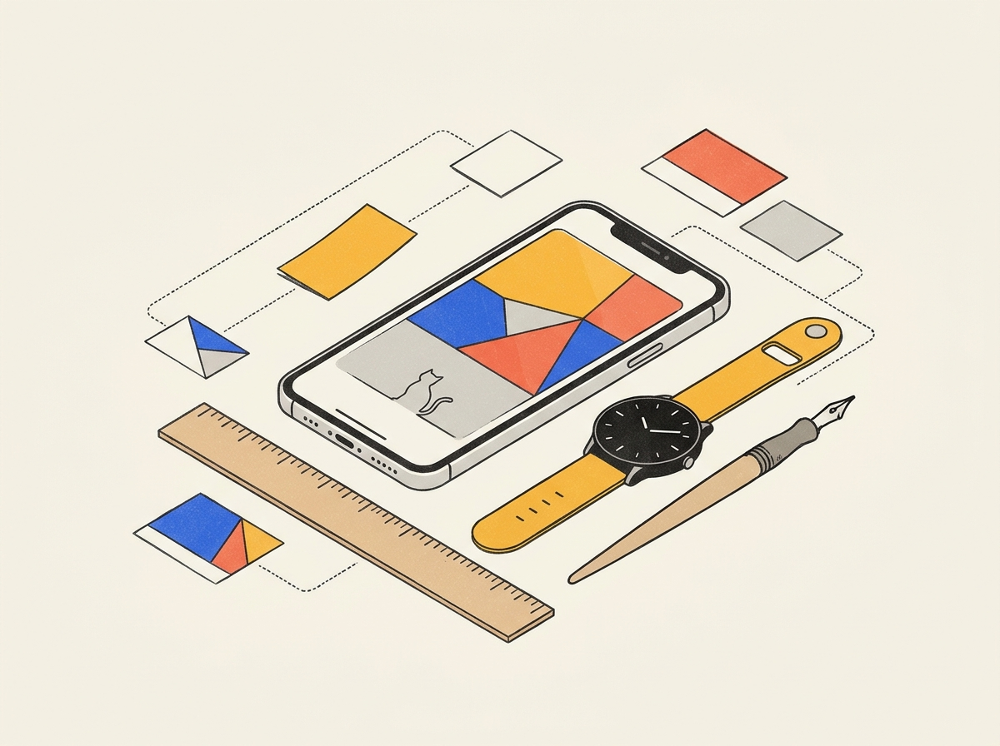
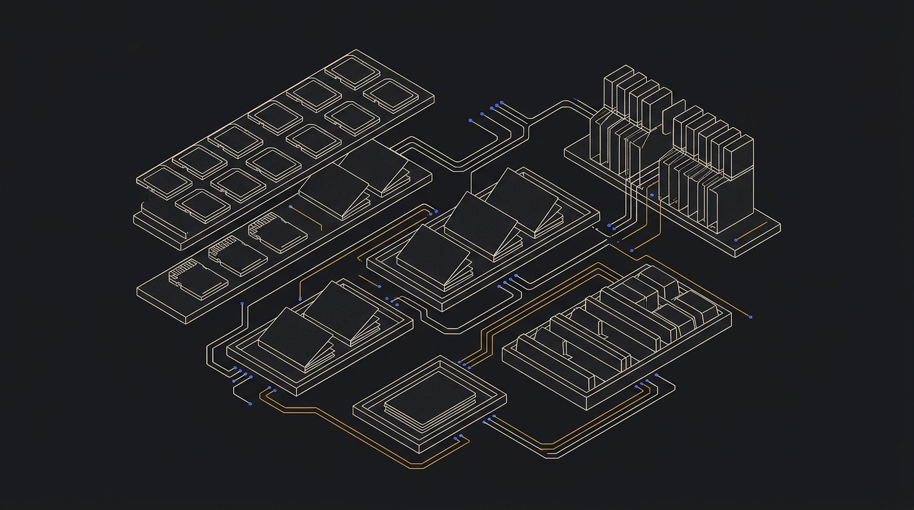

COLOR LAB · TOUCH UX
-39% retry
CASUAL GAME PRODUCT LEAD · NON-CODER AI OS ARCHITECT
把游戏直觉做成可验证实验，
用多 Agent 系统放大个人产能。
我是何为（Wayne），海外休闲游戏产品负责人，也是一位不手写一行生产代码、却靠编排多 AI Agent 跑通全链路工作流的 AI OS 构建者。从 46 款智能手表表盘起步，带队在 App Store 涂色与找物赛道收获 64,700+ 条玩家真实评分（最高 4.95★）。

NOW / 当前聚焦
涂色现金流精耕 × 找物新机制探索 × 个人/团队 AI 工作流实战化
64,700+
App Store 真实公开评分（9 款主推产品）
-39%
18dp 触控容错 A/B 降低小色块误触重试率
+139%
垂直题材重构带动次留近翻倍与时长跃升
0 手写代码
独立架构 4-Agent 协作与自动化 BI 管线
01 · Shipped Products & Roots
不只是做 PPT：真正在商店里跑出评分的作品矩阵
覆盖 Painting 涂色与 Hidden Object 找物两条主线（iOS / Android），附早期穿戴设备与组件原点。点击任意产品截图可放大查看。
02 · Product Craft Labs
像产品工程师一样拆细节：把直觉拉进可交互证据
好简历不应该只写「负责增长与变现」。下面两块把真实做过的 A/B 测试和关卡漏斗诊断做成了可直接点按的小玩具。
FIND LAB · LEVEL FUNNEL
390 Levels
找物关卡诊断：390 关漏斗与异常清零
03 · Non-Coder AI Operating System
不写代码的「AI 系统架构师」是怎么工作的？
代码全部交给 Codex / Cursor / Antigravity 执行，我专注于拆问题、定记忆边界、搭 MCP 数据总线与独立验收。点击左侧模块查看系统拆解。

公开开源基建（GitHub）
04 · Trajectory & Operating Notes
从 QA、46 款表盘到产品负责人的四年
每一段看似跨界的工作都在复用同一种底层敏感度：先贴近用户手指与屏幕，再抽象出系统规律。